PollenEDF V0.2 实拍实验
2026 年 11 月 27 日 · 原生像素与固定焦层顺序 · 日期拆分
仓库版保留同视野裁片、焦点曲线、测量表与运行证据。全分辨率成片和完整实验目录位于采集机的 artifacts/v02-real-20261127。
实验判断
- 冻结的 PollenEDF-Adaptive 在四个日期留出视野上的整体成片质量未达到 Helicon B。三个有清楚结构的视野仍见颗粒边缘或间隙的块状误选。11 月 11 日的亮环视野最明显。
- 自研冻结方案在四个留出暗区中的高通噪声均低于 Helicon B 和官方 focus-stack。自研、Helicon B、官方 focus-stack 的中位数分别为 0.386、0.706、1.303。原生调优的暗区更平稳，中位数为 0.271。纹理与轮廓以实际原片和局部成片核对。
- 自研的峰值 RSS 中位数为 670 MiB，耗时 16.23 秒。Helicon B 为 2008 MiB 和 3.27 秒，官方 focus-stack 为 3951 MiB 和 25.12 秒。原生调优组为 4749 MiB 和 14.52 秒。
- 开发集中，间隙修正压低了三处实际离焦填亮，弱栈单层回退去掉了短栈的块状伪影。留出集原始曲线显示，间隙信号可以来自更宽或非 U 形的响应。当前修正未覆盖这些区域。
- 已审计 266 张真实原片的顺序及 SHA-256。本轮完成 178 次全视野运行和 4 次真实原生裁片诊断。锁定版本、参数、清晰度曲线、焦层图、置信度图与进程日志可在下方核对。
基线与冻结方案
表内各计量为对应集内的视野中位数。前景数值取可信匹配的结构窗口。 边缘相关衡量一张原始焦层的局部相似性，适合辅助看图。Helicon 耗时包含 TIFF 写盘，转换 PNG 另计。
| 集 | 方法 | 完成视野 | 秒 | 峰值 RSS MiB | 暗区高通 RMS | 孤立点邻域亮残差像素 | 前景灰度 | 与原焦层边缘相关 |
|---|---|---|---|---|---|---|---|---|
| holdout | Helicon-B | 4/4 | 3.27 | 2008 | 0.706 | 116.0 | 83.69 | 0.620 |
| holdout | FS_Default | 4/4 | 25.12 | 3951 | 1.303 | 301.0 | 80.64 | 0.331 |
| holdout | FS_Tuned | 4/4 | 14.52 | 4749 | 0.271 | 22.5 | 86.87 | 0.578 |
| holdout | PollenEDF-SML | 4/4 | 5.50 | 286 | 0.737 | 139.5 | 84.58 | 0.310 |
| holdout | PollenEDF-Tenengrad | 4/4 | 5.46 | 287 | 0.708 | 123.5 | 84.28 | 0.462 |
| holdout | PollenEDF-DepthMap | 4/4 | 7.35 | 330 | 0.688 | 143.0 | 83.05 | 0.418 |
| holdout | PollenEDF-Adaptive · 冻结 | 4/4 | 16.23 | 670 | 0.386 | 77.5 | 82.98 | 0.506 |
| dev | Helicon-B | 5/5 | 3.16 | 2094 | 0.834 | 101.0 | 75.83 | 0.633 |
| dev | FS_Default | 5/5 | 24.44 | 3707 | 1.361 | 369.0 | 99.90 | 0.335 |
| dev | FS_Tuned | 5/5 | 10.39 | 4452 | 0.233 | 27.0 | 102.05 | 0.593 |
| dev | PollenEDF-SML | 5/5 | 4.81 | 281 | 0.781 | 167.0 | 103.27 | 0.282 |
| dev | PollenEDF-Tenengrad | 5/5 | 4.84 | 281 | 0.748 | 165.0 | 100.12 | 0.465 |
| dev | PollenEDF-DepthMap | 5/5 | 6.48 | 320 | 0.764 | 159.0 | 94.96 | 0.384 |
| dev | PollenEDF-Adaptive · 首轮 | 5/5 | 14.08 | 600 | 0.361 | 89.0 | 94.87 | 0.487 |
| dev | PollenEDF-Adaptive-Guard | 5/5 | 14.95 | 667 | 0.361 | 89.0 | 94.87 | 0.487 |
| dev | PollenEDF-Adaptive-GuardPool | 5/5 | 16.17 | 712 | 0.361 | 89.0 | 94.87 | 0.487 |
| dev | PollenEDF-Adaptive · 冻结 | 5/5 | 10.12 | 650 | 0.361 | 89.0 | 89.24 | 0.487 |
留出失败案例 · 11 月 3 日密集低对比视野
两处块状误选均位于局部低置信区域。焦层索引为输入顺序的 1 起始编号。全图有效前景内仍有足量高置信像素，因此该视野未触发整栈回退。
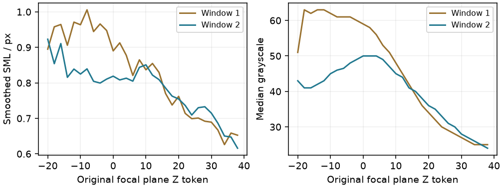
| 窗口 | 焦层索引 P10–P90 | 置信度中位数 | 间隙修正权重 | 单层回退权重 |
|---|---|---|---|---|
| 1 · 颗粒表面 | 1–13 | 0.286 | 0.000 | 0.000 |
| 2 · 颗粒间隙 | 1–12 | 0.341 | 0.000 | 0.000 |
开发集单因素比较
每个变体运行同一组 5 个开发视野。暗区高通 RMS 和孤立亮点邻域残差采用原片定义的窗口。 逐行坐标和置信匹配状态保存在 CSV。
| 集 | 方法 | 完成视野 | 秒 | 峰值 RSS MiB | 暗区高通 RMS | 孤立点邻域亮残差像素 | 前景灰度 | 与原焦层边缘相关 |
|---|---|---|---|---|---|---|---|---|
| dev | FS_Default | 5/5 | 24.44 | 3707 | 1.361 | 369.0 | 99.90 | 0.335 |
| dev | FS_NoAlign | 5/5 | 14.38 | 4411 | 0.996 | 267.0 | 101.79 | 0.489 |
| dev | FS_Global | 5/5 | 36.67 | 3421 | 1.649 | 335.0 | 96.74 | 0.370 |
| dev | FS_FullRes | 5/5 | 32.67 | 7369 | 1.345 | 353.0 | 100.19 | 0.369 |
| dev | FS_WhiteBalanceOff | 5/5 | 20.83 | 3645 | 1.277 | 419.0 | 114.02 | 0.445 |
| dev | FS_ContrastOff | 5/5 | 23.97 | 3859 | 1.320 | 385.0 | 101.14 | 0.318 |
| dev | FS_Consistency0 | 5/5 | 24.03 | 3709 | 1.485 | 417.0 | 99.96 | 0.303 |
| dev | FS_Consistency1 | 5/5 | 21.81 | 3607 | 1.446 | 389.0 | 99.69 | 0.309 |
| dev | FS_Consistency2 | 5/5 | 24.59 | 3865 | 1.361 | 369.0 | 99.90 | 0.335 |
| dev | FS_Denoise0 | 5/5 | 24.17 | 3807 | 1.559 | 398.0 | 99.88 | 0.333 |
| dev | FS_Denoise4 | 5/5 | 24.44 | 3713 | 1.045 | 315.0 | 99.94 | 0.346 |
| dev | FS_Denoise16 | 5/5 | 24.38 | 3774 | 0.752 | 205.0 | 100.07 | 0.387 |
| dev | FS_Denoise64 | 5/5 | 24.56 | 3630 | 0.638 | 124.0 | 100.34 | 0.491 |
| dev | FS_Reference6 | 5/5 | 26.95 | 3594 | 1.346 | 330.0 | 106.33 | 0.366 |
| dev | PollenEDF-SML | 5/5 | 4.81 | 281 | 0.781 | 167.0 | 103.27 | 0.282 |
| dev | PollenEDF-Tenengrad | 5/5 | 4.84 | 281 | 0.748 | 165.0 | 100.12 | 0.465 |
| dev | PollenEDF-DepthMap | 5/5 | 6.48 | 320 | 0.764 | 159.0 | 94.96 | 0.384 |
| dev | PollenEDF-Adaptive · 首轮 | 5/5 | 14.08 | 600 | 0.361 | 89.0 | 94.87 | 0.487 |
| dev | PollenEDF-SingleScale | 5/5 | 13.92 | 600 | 0.361 | 89.0 | 96.52 | 0.531 |
| dev | PollenEDF-NoiseOff | 5/5 | 14.62 | 608 | 0.361 | 89.0 | 102.11 | 0.430 |
| dev | PollenEDF-RefineOff | 5/5 | 14.64 | 595 | 0.361 | 89.0 | 94.87 | 0.477 |
| dev | PollenEDF-BackgroundOff | 5/5 | 13.75 | 597 | 0.676 | 123.0 | 94.87 | 0.487 |
| dev | PollenEDF-DefectsOff | 5/5 | 13.67 | 591 | 0.368 | 78.0 | 94.87 | 0.487 |
| dev | PollenEDF-SoftOff | 5/5 | 14.61 | 608 | 0.361 | 89.0 | 94.94 | 0.440 |
| dev | PollenEDF-Pyramid2 | 5/5 | 21.61 | 784 | 0.358 | 90.0 | 94.90 | 0.623 |
| dev | PollenEDF-Adaptive-Guard | 5/5 | 14.95 | 667 | 0.361 | 89.0 | 94.87 | 0.487 |
| dev | PollenEDF-Adaptive-GuardPool | 5/5 | 16.17 | 712 | 0.361 | 89.0 | 94.87 | 0.487 |
| dev | PollenEDF-Adaptive · 冻结 | 5/5 | 10.12 | 650 | 0.361 | 89.0 | 89.24 | 0.487 |
原生中间图
同一真实像素区域分离保存逆小波灰度和颜色重建后的结果。灰度投影及调试 JPEG 编码会影响数值。
FS_Steps_Default

同窗口暗区高通 RMS 0.697 / 0.605 / 0.566
FS_Steps_NoAlign

同窗口暗区高通 RMS 0.697 / 1.301 / 1.056
FS_Steps_NoAlign_Denoise0

同窗口暗区高通 RMS 0.697 / 1.541 / 1.150
FS_Steps_NoAlign_Denoise64

同窗口暗区高通 RMS 0.697 / 0.169 / 0.432
配准与重复亮点
用执行日志中的每层仿射角点预测相机固定亮点的轨迹。两幅暗区局部用相同的 8 倍显示增益。
相机位置 [2408, 1135] · 预测位移范围 12.9 px
相机位置 [2397, 1184] · 预测位移范围 12.6 px
相机位置 [2526, 1163] · 预测位移范围 12.4 px

相机位置 [2596, 1152] · 预测位移范围 12.2 px
相机位置 [2657, 1148] · 预测位移范围 12.1 px

相机位置 [2411, 1319] · 预测位移范围 11.8 px
近空白视野中的亮点轨迹
10-29 近空白视野的同一暗区以固定 8 倍增益显示。数值比较仍使用原始亮度。
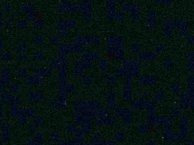
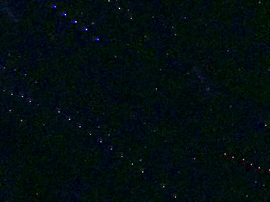
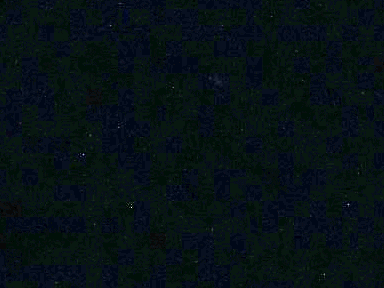
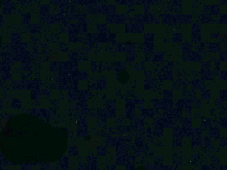
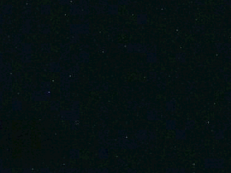
第一次自适应结果的间隙误选
三处颗粒间隙在原片中呈两端亮、中央暗的曲线。三处有结构的颗粒提供同区域对照。记录 7×7 像素中位亮度和修订前后的变化。
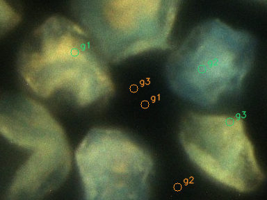
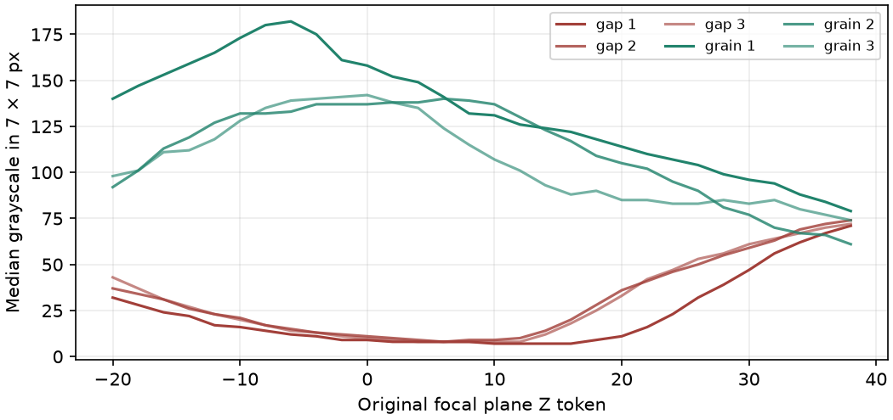
| 结果 | 三个间隙 | 三个颗粒 |
|---|---|---|
| raw_anchor | [12.0, 15.0, 14.0] | [182.0, 133.0, 139.0] |
| Helicon-B | [2.0, 3.0, 6.0] | [177.0, 131.0, 140.0] |
| FS_Default | [27.0, 21.0, 29.0] | [184.0, 140.0, 145.0] |
| FS_Tuned | [7.0, 8.0, 9.0] | [181.0, 142.0, 140.0] |
| PollenEDF-Adaptive | [70.0, 61.0, 55.0] | [178.0, 127.0, 138.0] |
| PollenEDF-Adaptive-Guard | [10.0, 10.0, 9.0] | [178.0, 127.0, 138.0] |
| PollenEDF-Adaptive-GuardPool | [10.0, 10.0, 9.0] | [178.0, 127.0, 138.0] |
| PollenEDF-Adaptive-GuardFallback | [10.0, 10.0, 9.0] | [178.0, 127.0, 138.0] |
2026-10-29 · Images_102002 · 1_(-2400_-1800)
dev · near-empty dark control
近空白控制。Helicon 中的点状长亮痕在自研暗区明显减弱。下方固定增益对照用相同显示条件。
独立暗区 · 相机像素 (2812, 1608) · 384 × 288
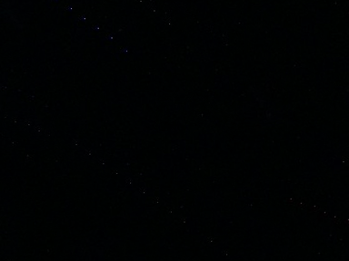


焦点评分曲线
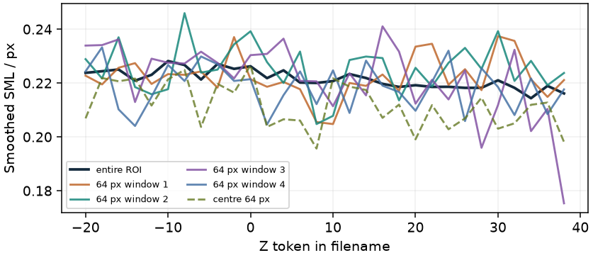
2026-10-29 · Images_144803 · 61_(0_0)
dev · dense, bright yellow-green
密集样本。首轮 Adaptive 误把离焦信号写入颗粒之间。间隙权重修订压低三处定位亮斑，三处被抽查的颗粒内部亮度相同。
结构窗口 · 相机像素 (2580, 948) · 384 × 288
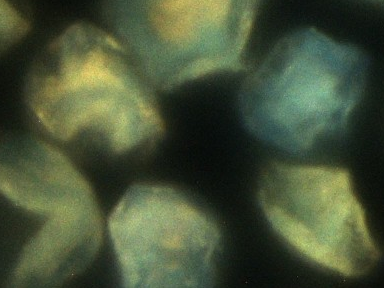
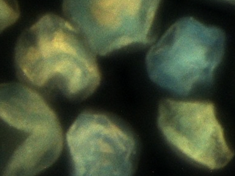
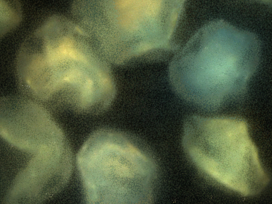
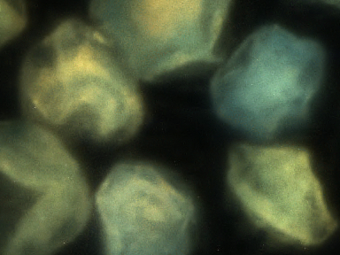
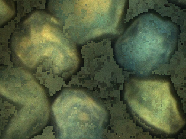
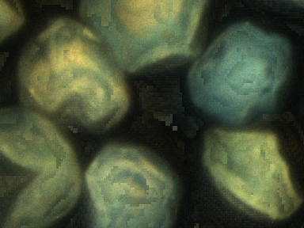
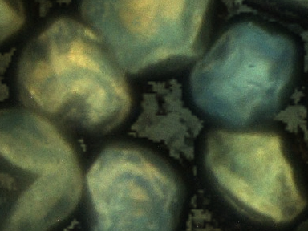
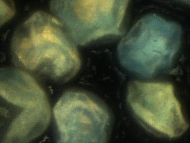


焦点评分曲线
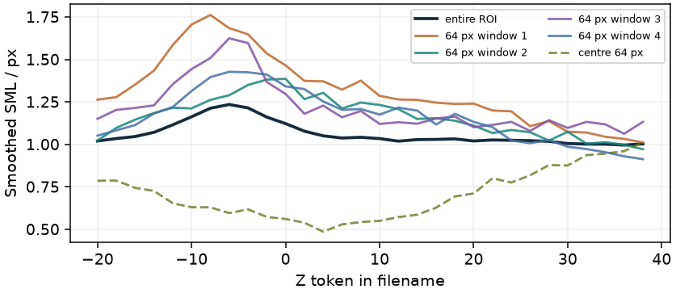
原片边缘法向亮度曲线
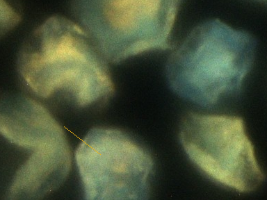
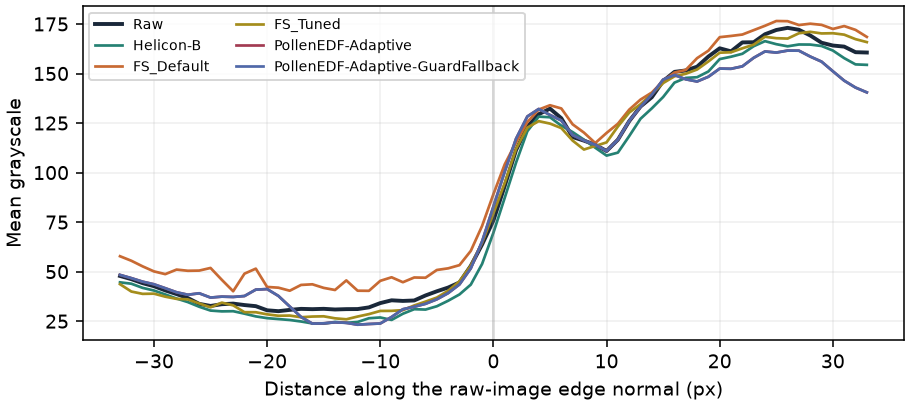
第二结构窗口 · 相机像素 (2704, 644) · 384 × 288
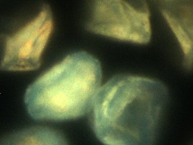


2026-10-30 · Images_140410 · 4_(-960_-1800)
dev · short stack, focus close to the first plane
焦栈仅有 26 层，多个局部评分在端点达到最大。硬选择和首轮 Adaptive 均可见块状过渡，冻结方案用代表性原片降低伪边界。原片的轮廓模糊仍可见。
结构窗口 · 相机像素 (1928, 1228) · 384 × 288

第二结构窗口 · 相机像素 (2840, 504) · 384 × 288


2026-11-05 · Images_163242 · 61_(0_0)
dev · sparse dim particles
稀疏、低亮。重复亮点处理减少暗区尖峰，紧凑窗口中央的弱亮斑仍见。可从同区多焦点评分看到竞争的峰值。
结构窗口 · 相机像素 (3212, 2392) · 384 × 288


2026-11-06 · Images_163002 · 16_(-480_-1440)
dev · blue-green rings and bright-pixel trails
亮环与蓝绿色颗粒。原生默认将相机暗区重复亮点拉成弧段，无配准的调优和自主结果保留点状残差为主。白平衡和参考焦层对同一前景的颜色变化明显。
结构窗口 · 相机像素 (2236, 2320) · 384 × 288

紧凑小颗粒窗口 · 相机像素 (924, 1316) · 384 × 288


2026-11-03 · Images_160942 · 61_(0_0)
holdout · dense, low contrast
密集、低对比。Adaptive 的颗粒表面和片间间隙出现块状斑纹，Helicon B 和原生调优的形态过渡更连续。两个问题窗口的置信度中位数约 0.29 和 0.34，分别跨多个焦层。
结构窗口 · 相机像素 (2416, 1488) · 384 × 288


2026-11-04 · Images_085918 · 16_(-480_-1440)
holdout · numerous bright particles
亮颗粒。Adaptive 保留部分外壁和紧凑窗口中央的弱蓝斑，不过在暗间隙写入灰绿斑块。Helicon B 的暗间隙和边缘连续性更稳定。
结构窗口 · 相机像素 (2232, 96) · 384 × 288


2026-11-11 · Images_145648 · 31_(1440_-1080)
holdout · bright rings, mixed texture
明亮环状外壁。Adaptive 在局部间隙中留下大片灰蓝误填和阶梯边缘。紧凑弱蓝斑仍在相机坐标出现。Helicon 和官方默认在这个紧凑窗口的配对低于阈值，保留视野偏移供观察。
结构窗口 · 相机像素 (1788, 2460) · 384 × 288


2026-11-13 · Images_104731 · 106_(480_1440)
holdout · very sparse dim particles near the edge
稀疏、低对比。单层回退降低细线式残差和碎块，成片仍柔软。原片得分较弱且细小弧线在部分焦层才可见，未确认恢复更多外壁细节。
结构窗口 · 相机像素 (64, 580) · 384 × 288


数据与记录
原片确定观察窗口。每个方法的输出以相机坐标或整数相关匹配定位到相同的内部区域。 低匹配窗保留视野偏移，仅供看图。背景掩膜使用跨焦层亮度上界，孤立点要求在多数源焦层的同一位置出现。 固定版二进制与自研源码哈希分别由运行记录保存。
locked.json · native-candidate.json · native-ofat-plan.json · native-capabilities.json · pollen-capabilities.json · dev-roi-spec.json · holdout-roi-spec.json · dev-measurements.csv · holdout-measurements.csv · dev-metrics.json · holdout-metrics.json · dev-native-ofat.json · dev-native-locked.json · dev-pollen-ofat.json · holdout-native-locked.json · holdout-pollen-locked.json · dev-pollen-revised.json · dev-pollen-fallback.json · pytest.txt · holdout-checks.json · holdout-low-contrast-failure.json
dev-native-ofat 运行记录 · dev-native-locked 运行记录 · dev-pollen-ofat 运行记录 · holdout-native-locked 运行记录 · holdout-pollen-locked 运行记录 · dev-pollen-revised 运行记录 · dev-pollen-fallback 运行记录
运行摘要与日志索引
dev-helicon · dev-native-locked · dev-native-ofat · dev-pollen-fallback · dev-pollen-ofat · dev-pollen-revised · holdout-helicon · holdout-native-locked · holdout-pollen-locked · native-steps